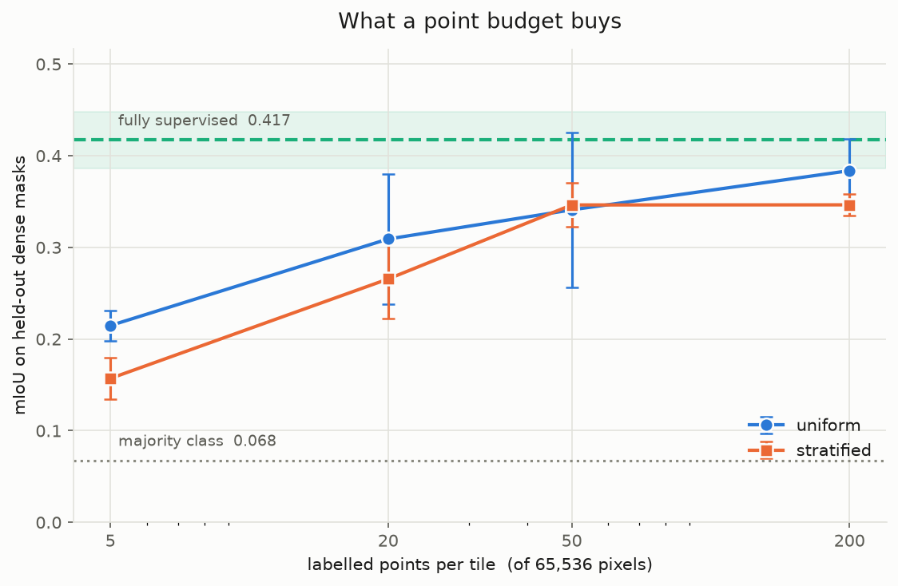

Partial cross-entropy for point-supervised land-cover segmentation
Oluwatifunmilayo Ude · September 2026
200 labelled pixels out of 65,536, about 0.3% of the image, recovers 92% of fully supervised mIoU on LoveDA urban tiles.
Class-balanced sampling, the obvious remedy for the class imbalance in this data, does not improve mean mIoU at any budget tested. It cuts the spread across seeds by roughly a factor of three.

What was measured
- 33 training runs over two sampling strategies and four budgets (5, 20, 50, 200 points per tile), with three seeds each and six at N=50.
- Partial focal cross-entropy, verified against
F.cross_entropyrather than assumed correct. - Evaluation against dense masks on held-out tiles drawn from the same distribution as training.
What was wrong
- Stratified sampling was predicted to help most at small budgets. It hurt most there: five points split across seven classes gives each one pixel, which teaches nothing while removing signal from classes that had it.
- Rare classes were predicted to stay depressed under every strategy. They recovered to within 94% of the ceiling. Agriculture's weak IoU is a property of the class, not of the supervision.